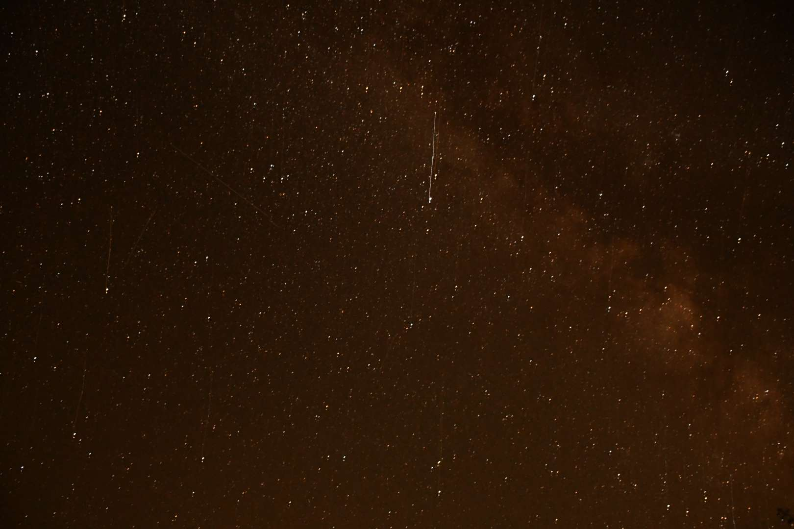
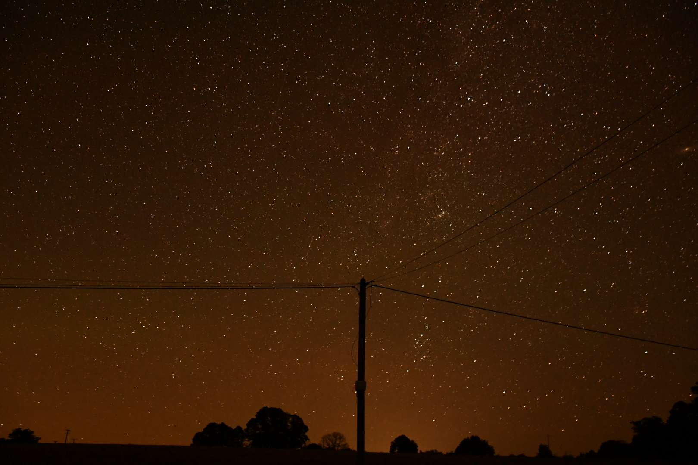
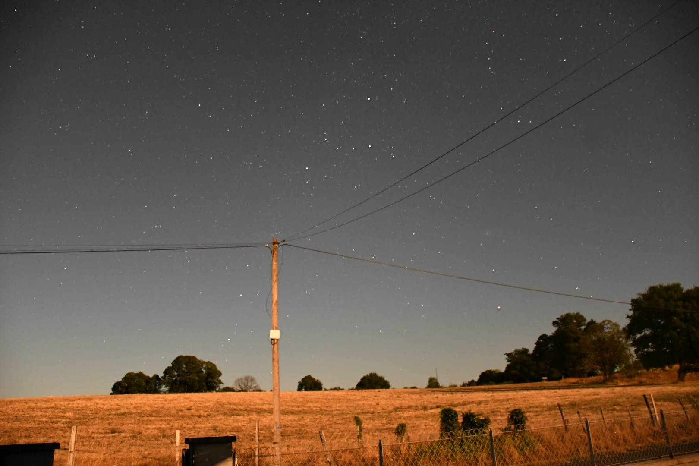
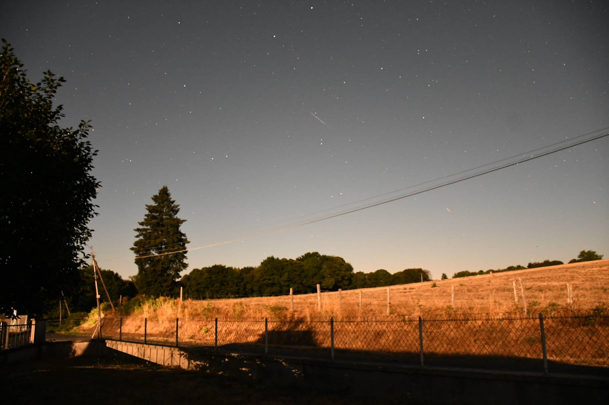
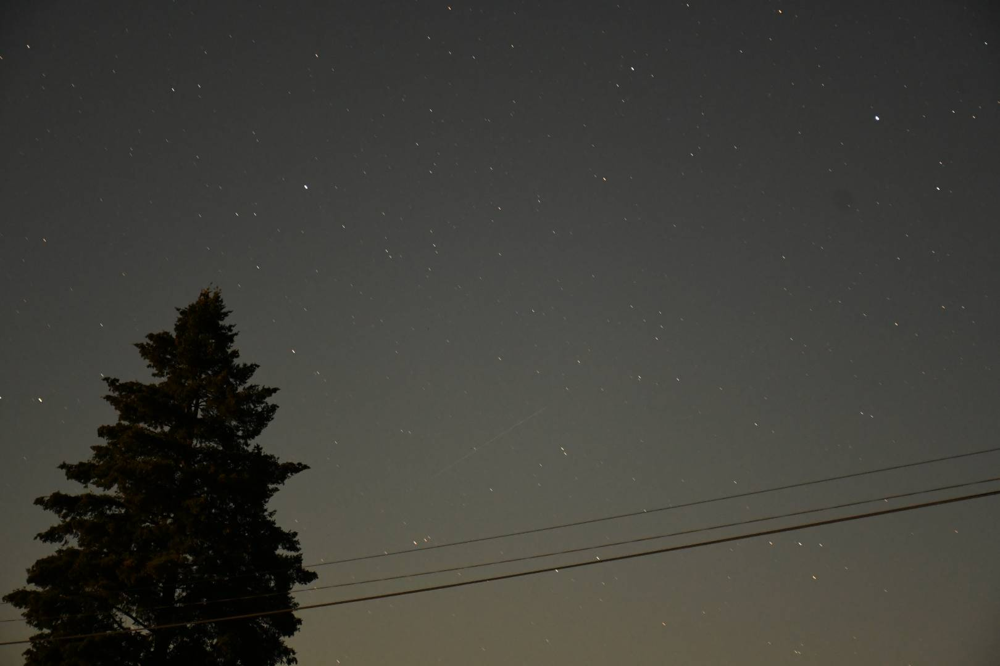
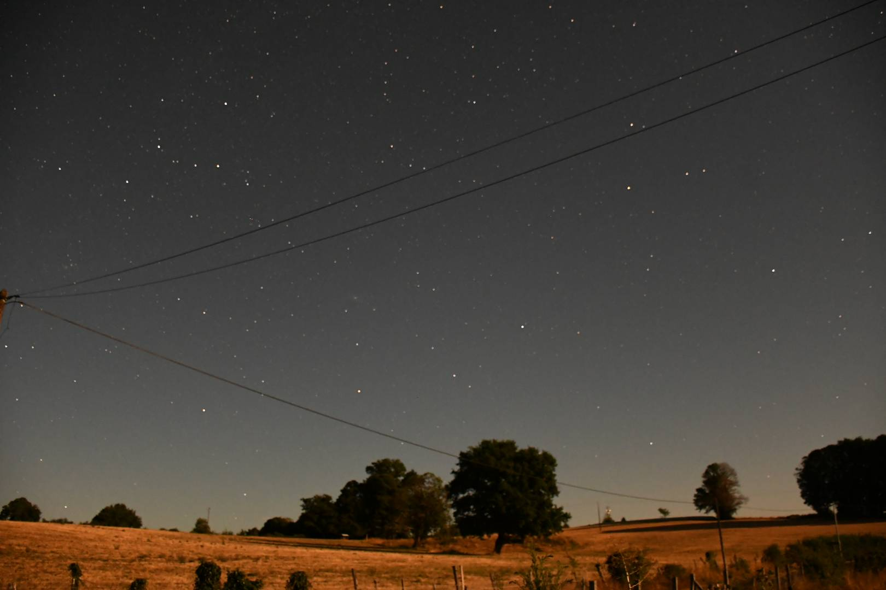
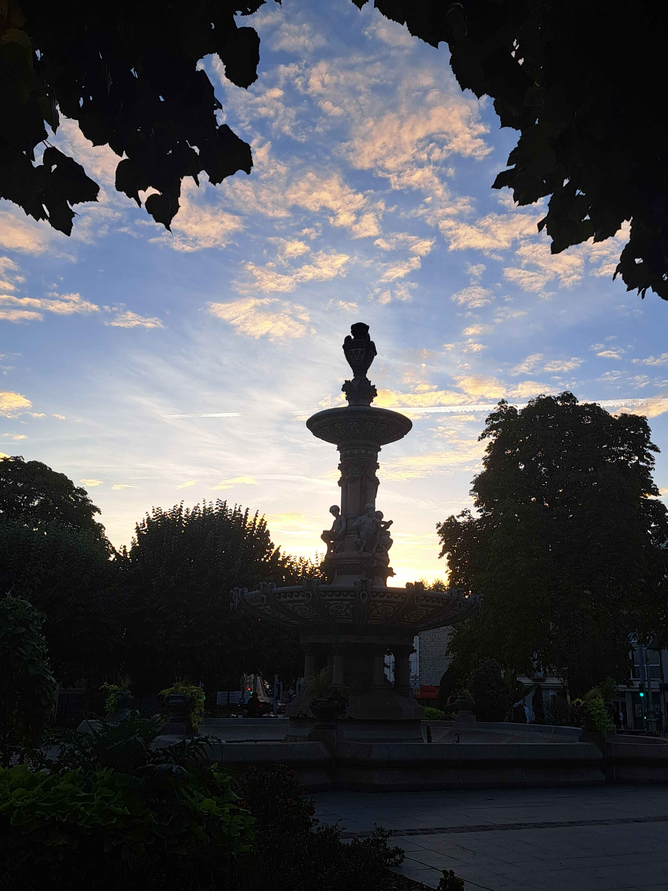

Rock en Seine
Aucune photo pour ce projet.


Hakim ELKHIA
Étudiant en MMI
Design graphique, photographie et création web.
À la recherche d’opportunités en communication visuelle, design graphique et création web.
Qui je suis
Curieux et créatif, j’aime concevoir des univers visuels et donner forme à des idées. En design comme sur le web, je cherche à créer des projets qui marquent les esprits.
Des projets réalisés pendant mes études.
Aucune photo pour ce projet.
Aucune photo pour ce projet.







Aucune photo pour ce projet.
Aucune photo pour ce projet.
Aucune photo pour ce projet.
Aucune photo pour ce projet.
Ce que je sais faire
Des compétences développées à travers mes projets universitaires et personnels.
Imaginer un univers graphique et le décliner sur différents supports pour un projet collectif autour de Rock en Seine.
Créer une série de stickers pour représenter des compétences, avec Illustrator et Photoshop.
Réaliser et présenter une sélection de photographies personnelles prises pendant mon temps libre.
Concevoir des pages web dans le cadre de projets universitaires, dont un site inspiré de Netflix et une landing page pour un cinéma.
Communication visuelle, design graphique ou création web : je serais ravi d’en discuter avec vous.
J’ai envie de contribuer à des projets qui font dialoguer image, identité visuelle et création web.
Au plaisir d’échanger, Hakim ELKHIA